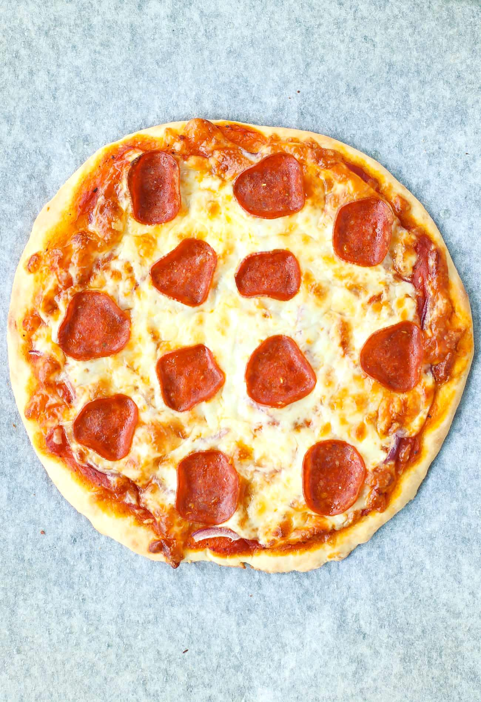

Greek Yogurt Pizza Dough Pizza

This pizza is made with greek yogurt in it's dough! Give it a try!
Ingredients
- Greek Yogurt Plain
- Flour
- Pizza sauce
- Mozzarella Cheese
- Turkey Pepperoni
Steps
- Mix Greek yogurt and flour in a 1:1 ratio for your desired amount of dough
- Once dough has reached dought status, form pizza dough shape on a pizza pan or baking sheet
- Place desired pizza sauce on dough
- Cover in cheese, and place turkey Pepperonis on top
- Preheat oven to 400 degrees farenheight
- Put pizza in oven for 15 minutes and check on it every few minutes
- Once desired look of pizza is complete, take out of oven and enjoy!